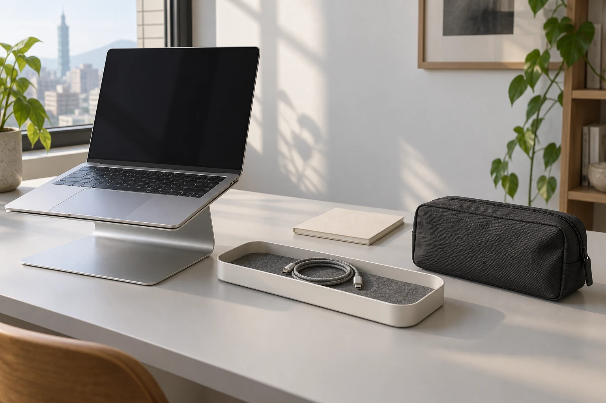

Taipei / Since 2019
Between the idea
and the everyday.
Latchline is a fictional team of nineteen people designing non-powered objects for desks, bags and the small transitions in a working day.

Industrial design, in ordinary life
Start with
the thing itself.
The fictional studio works across industrial design, sample coordination, retailer support and everyday operations. Its focus is a small set of objects with choices that can be explained, measured and seen.
Arc gives a laptop a fixed platform. Dock gathers disconnected small items. Fold travels with them. Materials and dimensions do the work; a battery or an app would not help these particular products.
A considered route to retail
The concept business serves Taiwan directly and would work with selected independent retailers internationally. This website does not name actual stockists or offer worldwide checkout.
For a real retail conversation, prepare the store type, region, proposed products and quantities. The example address objects@latchline.example is not a connected inbox.
Download the retailer checklist ↓A concept, clearly stated.
Latchline Objects is a fictional commission in the Fieldwork Digital portfolio. The business history, collection, prices and dimensional values are invented. Product photographs are original generated studies, not proof of production, tested fit or electrical certification.
Fit and set tools run in the current page. Reloading or leaving clears edits; explicit product and dimension links may restore only their stated starting values. Downloads remain on your device. No purchase, payment, shipping, account, device access, live inventory or external message is connected.
Back to the full portfolio ↗